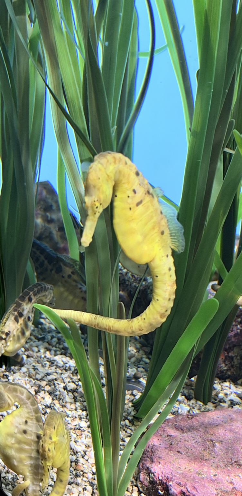

Review candidate · General anatomy, not photo identification

| Feature | What to know | What this photo shows |
|---|---|---|
| Eyes | The eyes can move independently. | Eye position is visible; independent movement cannot be demonstrated by a still photograph. |
| Elongated snout | The long snout ends in a small mouth used for suction feeding. | The snout is visible. |
| Trunk rings | Bony plates form rings around the body beneath the skin. | The ringed body covering is visible. |
| Chromatophores | Specialized pigment cells help the skin change color for camouflage. | Color change and individual pigment cells are not demonstrated in this photograph. |
| Pectoral fins | The paired pectoral fins help with steering and control. | Do not use a pointer to a fin that is obscured or cannot be identified confidently. |
| Dorsal fin | The dorsal fin helps propel the seahorse through the water. | The dorsal fin is visible along the back. |
| Male brood pouch | Male seahorses brood developing young in a pouch. | This general fact does not identify the photographed animal’s sex or reproductive state. |
| Prehensile tail | A grasping tail helps a seahorse hold onto vegetation and other supports. | Part of the tail is visible; its tip is not fully shown. |